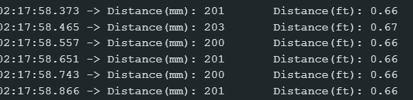

Lab 3 Time of Flight Sensors
Zhiyuan Zhang
Introduction
The objective of this lab is to equip two time of flight sensors and test range, accuracy, repeatability, and reading time of the sensors
Lab Procedure And Result
Setup the IMU
b) In order for two sensors at the same time, we have to change one of the sensor addresses to another address as the default address for two sensors is the same. Thus, I changed one of the default addresses to another address using the XSHUT pin. During the set-up process, shut down the sensor that needs to change the address and assign a new address through the program. After setting up, turn on the sensor by changing the XSHUT high.
c) I decided to place one sensor at the front of the robot while another will be placed on the right side of the robot. In this case, the robot will miss the obstacles on the left side and the back side will be missed
d) The figure below shown my wiring diagram:
The codebase has two directories: ble_ardunio and ble_python. The ble.ardunio contains ble_ardunio.io is the main code that the Artemis Board will run, along with three class definition files that support sending messages to the computer and receiving the commands from the computer. The ble_python contains the demo.ipynb which is the main Jupyter Notebook we run. Other files contain functions that allow the computer to send commands and receive messages from the board.
2. Sensor Soldering and connection
Based on the wiring diagram, the result after soldering is shown below:

To test the connection ,run the Example1_wire_I2C, and the address 0x29 is shown in the serial monitor:
The address value 0x29 differed from the value of 0x52, which was claimed in the VL53L1X's datasheet. The reason behind this is that I2C communication sends the most significant bit (MSB) first. Specifically, 0x29 is represented as 101001 in binary, while 0x52 is represented as 1010010. The first 7 bits of both values are identical. To fill the remaining bit, a zero is added at the end, resulting in the transformation of 0x29 into 0x52.
3.Sensor measurement
The sensor is equipped with two modes, namely short-distance and long-distance modes. According to the datasheet, the short-distance mode has the ability to detect objects up to 135 cm in distance (under strong light conditions), whereas the long-distance mode can detect objects up to 400 cm. However, it is worth noting that the long-distance mode may not perform well in the presence of strong ambient light, as per the datasheet. After considering the robot's working conditions and range, it seems that the short-distance mode would suffice and perform well for the robot's need
To test the sensor’s distance measuring, I corroborated with Sizhe Gao(SG2267), and we set up the measuring method shown in the figure below:

I measured 10 data points (the distance between each tape on the desk is 10cm), and the result plot is shown below
Based on the plot, it is evident that the sensor exhibits a larger discrepancy when measuring distances that are less than 30cm. For instance, when measuring a distance of 10cm, the error is 2.8cm. However, it is worth noting that the overall performance of the sensor is satisfying in the range from 0 to 1m.
4. Two sensor working in parallel
As described in the prelab session, I changed one sensor address to 0x33 so that both sensor measure distance at the same time. The code for changing address is shown below:
The result of running the measure distance with two sensor shown in the video below:
5.Speed test
To measure the speed of the TOF sensor, I use the function to test the checkForDataReady() to check if the sensor is ready to measure. When the sensor is ready, it will perform measurements. We can measure the loop time when the sensor is getting the distance and the loop time simply the loop time without any execution. The function and result are shown below:
The loop takes 11ms when the sensor is working, the loop itself takes 8ms. The sensor's getdistance function takes 3ms.The limitation is probably the I2C transmission time between sensor and the board.
6.Time VS distance
In this part, I wrote a new command called GET_TOF_10s that will return the time, and distance data from sensor1 and sensor2 to the computer ends. On the computer side, I wrote a tof_handler () to store the time and distance data from the Artemis board. The code snippets are shown below:
The plot of the data send over bluetooth is shown below:
9. Disscusion of two IR sensor
Infrared (IR) distance sensors and Time-of-Flight (ToF) sensors operate by emitting and receiving infrared signals. Typically, ToF sensors emit a Pulse Width Modulated (PWM) signal into the environment and measure the time it takes for the reflected signal to return, which is then used to calculate the distance. As ToF sensors use waves as the medium, their speed is close to that of light and they are almost immune to variations in surface colors, textures, and ambient lighting conditions
In contrast, an IR sensor comprises an infrared LED that transmits a beam into the environment, and distance is calculated based on the reflection of the beam from obstacles. While IR sensors are affordable and provide reasonable performance, measuring long distances can be challenging due to the difficulty in detecting small angles as the distance increases. Additionally, IR sensors are sensitive to surface colors, textures, and ambient lighting conditions
10.Sensitivity of sensors to colors and textures
In this part, I first test the distance when the obstacle is the red paper box, the result is shown below:
Then I test the distance when the obstacle is a blue paper box, the result is shown below:
After that I test the distance when the obstacle is a green paper box, the result is shown below:
Finally, I test the distance when the obstacle is brown leather, the result is shown below:
As we can see from the results above the texture or the colour of the obstacle will not affect the performance of the TOF sensor.